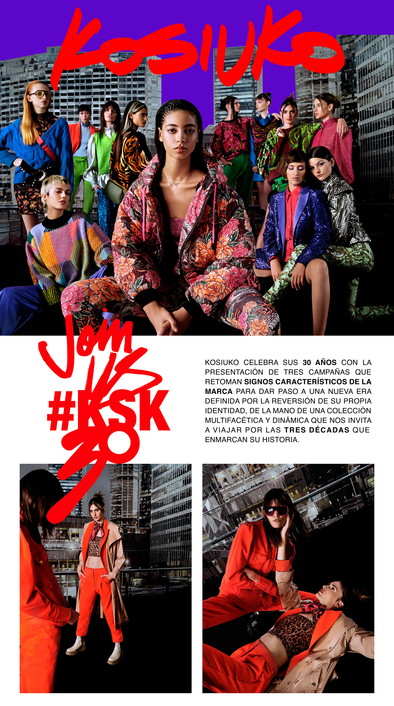

REVISTAS
Descubrí las revistas que han destacado a la marca

Las revistas plasmaban el concepto "Modern Look Industries", simulando una estética hiper-internacional y cosmopolita.

Las locaciones: Los lanzamientos de temporada no se fotografiaban en estudios comunes. Las producciones se hacían en destinos aspiracionales y urbanos globales como las calles de Tokio, Nueva York, Ibiza, Saint-Tropez o Miami.
El estilo fotográfico: Tenían un enfoque crudo, nocturno, muy influenciado por la cultura del clubbing, la música electrónica y el pop de la era MTV. Se utilizaban efectos de flash directo, colores saturados, estéticas cibernéticas y poses muy descontracturadas que definieron el movimiento Y2K en Argentina.
Las revistas formaban parte de un universo multimedia masivo. Hacia el año 2003, la hiperactividad de los fundadores llevó a que la marca lanzara su propio sello de música electrónica (KSK Records) y su propia estación de frecuencia modulada (KSK Radio 101.9)
www.kosiuko.com
@kosiuko.ok
info@kosiuko.com
Francesca Barbieri